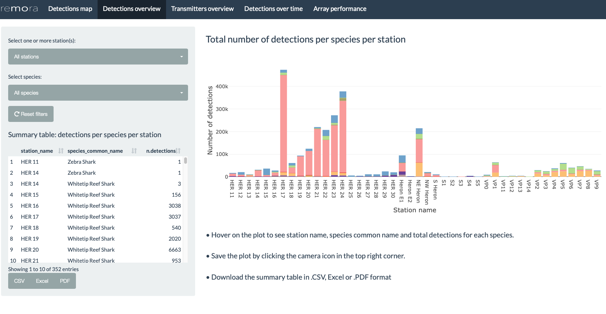

shinyReport_receivers
Data Visualisations: Receiver Array Report
Source:vignettes/shinyReport_receivers.Rmd
shinyReport_receivers.RmdThe remora package includes statistics and data
visualisations for acoustic telemetry receiver array
and tagging projects. The shinyReport()
function allows users to create an interactive data report for their
projects, which comprises a range of visualisations and analytical tools
to aid data exploration and project management. The resulting plots and
tables can be downloaded for further use and analysis. This interactive
report is an exploratory tool and should not be considered an extensive
analysis toolkit.
Currently, the focus of the remora package is to
integrate animal telemetry data and oceanographic observations collated
by Australia’s Integrated Marine Observing
System. Therefore, the geographical scope of available datasets is
currently restricted to the Australasia region.
Receiver Array Report
The receiver array report provides users with basic summary statistics and data visualisations for their acoustic telemetry receiver array project. When called, the function produces an interactive Shiny App that will open in the user’s default internet browser.
Run Shiny App
The remora package should be installed prior to calling
the functions described in this vignette.
The shinyReport() function requires the user to specify
the type of report to produce. Two options are available depending on
whether the user wishes to produce a report for their receiver array
project (receivers) or tagging project
(transmitters).
This vignette describes the receiver array (receivers)
report.
library("remora")
shinyReport("receivers")The shinyReport() function will generate a pop-up window
enabling the user to navigate and select the detections data .CSV file
for the receiver array project of their choice. Once this file is
loaded, another pop-up window will appear prompting the user to select
the corresponding receiver deployment metadata file. Note: the
pop-up windows appear in the background of RStudio for some OS.

These files can be accessed via the IMOS Australian Animal Acoustic Telemetry Database.
For the detections file, the user can access the Detections tab, filter by “Receiver Deployment Project Name”, and download the data.
For the receiver metadata file, the user can access the Receiver Deployments tab, filter by the same project selected above, and download the data.
Alternatively, the user can select their own data, previously formatted to match the IMOS database output format.
In this vignette, multi-year and multi-species data from the IMOS Heron Island receiver array project are presented as an example.
Detections map
Map of the detections recorded at each station in the receiver
array. The user can select different datasets to overlay on the map
including the number of detections, transmitters or species detected.
Additionally, the date range can be modified with the time slider on the
left panel. Hovering on the markers reveals pop-up text including the
station name, installation name, number of detections, number of
species, number of transmitters and the coordinates of the receiver
station.

Detections overview
Bar plot presenting the number of detections recorded at each
station, colour-coded according to the different species detected in the
array. The user can filter by station and/or species to explore patterns
in the data. Hovering on each bar will reveal additional information
including the station name, species common name and number of detections
recorded.
The plot can be saved by clicking on the camera icon in the top right corner.
The summary table on the left panel summarises the number of detections per species per station within the receiver array. This summary table is refreshed as the user selects different filter options. This table can be saved as .CSV, Excel or .PDF file by clicking on the respective buttons.

Transmitters overview
Bar plot presenting the number of transmitters detected at each
receiver station, colour-coded by according to the different species
detected in the array. The user can filter by station and/or species, as
required. Hovering on each bar will reveal additional information
including the station name, species common name and number of
transmitters detected.
The plot can be saved by clicking on the camera icon in the top right corner.
The summary table on the left panel summarises the number of transmitters detected per species at per station. When the user selects different filters the summary table will be modified accordingly. This table can be saved as .CSV, Excel or .PDF by clicking on the respective buttons.

Detections over time
Detections per station
Scatter plot presenting the number of detections per day
recorded at a receiver station, colour-coded according to the receiver
deployed. The user can filter by installation, station, month and/or
species to explore patterns in the data. Additionally, the user can
select a different timezone (default timezone is UTC; WARNING modifying the timezone may incur some
delays to update the plot).Hovering on the data points reveals
additional information including the date, number of detections recorded
and the receiver name.
The plot can be saved by clicking on the camera icon in the top right corner.

Detections per hour
Box plot presenting the number of detections recorded per hour.
The user can filter by installation, station, month and/or species.
Additionally, the user can select a different timezone (default timezone
is UTC; WARNING modifying the timezone may
incur some delays to update the plot).Hovering on the plot will
reveal additional information including the maximum value, upper fence,
Q3, median and Q1.
The plot can be saved by clicking on the camera icon in the top right corner.

Array performance
Plot of the Station Efficiency Index, modified from Ellis et al. (2019) and based on the resonATe toolkit. This index assesses the performance of a station in the context of the entire receiver array. Values range from 0 to 1, with higher values indicating higher performance.
Where:
- = Station Efficiency Index
- = Number of tags detected on the station for the date range selected
- = Number of tags detected across all stations for the date range selected
- = Number of species detected on the station for the date range selected
- = Number of species detected across all stations for the date range selected
- = Number of unique days with detections for the station and date range selected
- = Number of unique days for the date range selected
- = Number of days for the date range selected
- = Number of days that the station was active*
*Note:
If the station was active for more days than the date range selected
If the station was active before the date range selected, the start date of will be the same as the start date for
If the station was active until after the end date for the date range selected, the end date of will be the same as the end date for
The user can filter by installation and date range (i.e. days where the station was considered active). Hovering on the plot will reveal additional information including the value of the index for each station. The plot can be saved by clicking on the camera icon in the top right corner.
The table on the left panel summarises the names of the receivers deployed at each station for the installation and date range selected. This table can be saved as .CSV, Excel or .PDF by clicking on the respective buttons.

Note: To explore and visualise data relative to a tagging project, head over to the shinyReport_transmitters vignette
References
Ellis, R.D., Flaherty-Walia, K.E., Collins, A.B., Bickford, J.W., Boucek, R., Walters Burnsed S.L., Lowerre-Barbieri, S.K. (2019) Acoustic telemetry array evolution: From species- and project-specific designs to large-scale, multispecies, cooperative networks. Fisheries Research (209): 186-195. https://doi.org/10.1016/j.fishres.2018.09.015
IMOS (2021). Animal Tracking Database. https://animaltracking.aodn.org.au. Accessed: 2021-10-11.
Vignette version 0.0.5 (5 Nov 2021)